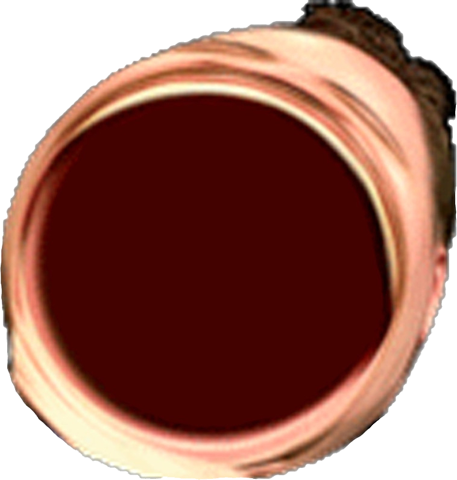

Az ingyenesen letölthető játék elején található egy hasznos kis tutorial, ami megtanít minket arra, hogy mikor mit kell csinálnunk. Tehát például amikor a körök elérik a számokat akkor kattintani kell, vannak sávok amin végig kell vezetni a golyót, és vannak "spinner"-ek is, amiket pörgetnünk kell. Csak a csuklónk és a klaviatúra bírja…
Vannak különböző módok is, amivel könnyíthetünk, vagy akár nehezíthetünk is a játékon. Ezek aktiválásával befolyásolhatjuk a szerzett pontok számát. Könnyítő tényező még, hogy a kattintás nem csak az egérrel történhet, hanem több billentyűt is kijelölhetünk erre a célra. Gyakran a játék hátterében nem csak egy kép található, hanem videók, anime openingek is, azonban ezek inkább megnehezítik a játékot, ugyanis úgy vannak kialakítva, hogy sokkal nehezebben tudjuk észrevenni a felugró köröket, ahová kattintanunk kellene.
A programban 4 különböző játékmódot találunk. De a többi játékmód úgyse érdekel senkit. 